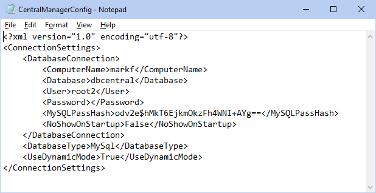

CEMT Setup
Some setup is required before using the Central Enterprise Management Tool ( CEMT ).
Configure the Central Manager
Update to the latest stable version of Open Dental before using the CEMT tool.
These steps are required before the CentralManager.exe file (open the Central Manager main window) can be launched.
- Stop the MySQL service.
- Place a blank copy of an Open Dental database in the C:\mysql\data folder. Rename it to identify it as the central manager database (e.g., dbcentral).
- For MySQL Users: If using Open Dental 20.5.63 or newer, a database for this purpose can be downloaded here: dbcentral_20_5_63.zip.
- For MariaDB Users: If using Open Dental 21.1.49 or newer, a database for this purpose can be downloaded here:dbcentral_21_1_49.zip
Note: To save the database, right-click and Save As. If Google Chrome displays a security warning, select Keep. - Start the MySQL service.
- Open Open Dental and select dbcentral from the Choose Database window. This updates dbcentral to the current version of Open Dental.Note:
- If the Choose Database window does not appear on startup, run Open Dental as a administrator, then go to File, Choose Database. Uncheck Do not show this window on startup (this computer only). Close Open Dental then try again.
- After the database is updated an Add Regkey window appears. A registration key is not required for the CEMT database. Simply close the regkey window.
- Copy FreeDentalConfig.xml from C:\Program Files (x86)\Open Dental to the desktop.
- Rename the file to CentralManagerConfig.xml and right click on the file and select Edit with Notepad. It will look similar to the following:
- Change the ComputerName to reflect the name or IP address of the server.
- Change the database name to the central manager database (e.g. dbcentral).
- Ignore the parameters for NoShowOnStartup and UseDynamicMode, if present. These parameters are ignored.
- Move this file from the desktop to Open Dental installation directory (typically C:\Program Files (x86)\Open Dental\)
- Launch CentralManager.exe from the Open Dental program folder to begin using CEMT. Create a Windows shortcut to this program to make it easier to open in the future.
- Once the CEMT is launched, set up database connections and define users, permissions, and other security settings.
- Set up CEMT Connections.
- Create connection groups.
- Define CEMT Security settings (users, user groups, permissions, lock dates).
Adding CEMT to an Additional Workstation
- On the server, copy the CentralManagerConfig.xml file to the OpenDentImages folder.
- On the workstation, open the OpenDentImages folder.
- Copy the CentralManagerConfig.xml file and paste it into the Open Dental directory (typically C:\Program Files\Open Dental (x86)\)
- Launch the Central Manager.
Middle Tier
If the central manager database is hosted on a Middle Tier server, also add a new middle tier XML node for the URI: <MiddleTierAddr></MiddleTierAddr>. Add it directly under the password node.
CEMT does not work for Middle Tier connection when using eClinicalWorks.